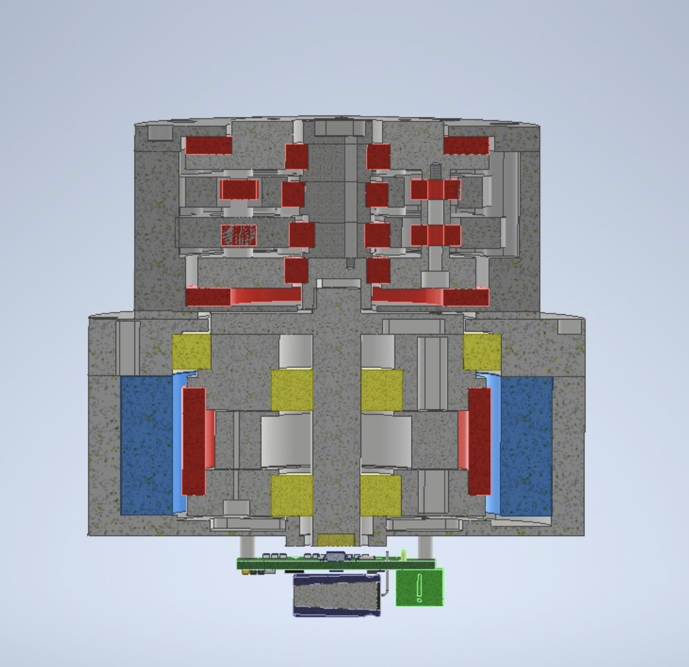
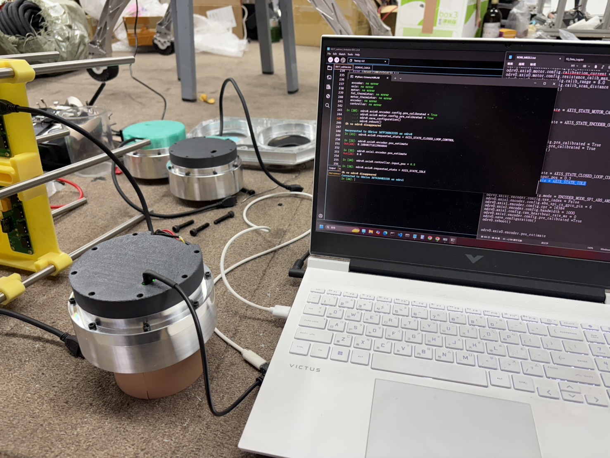
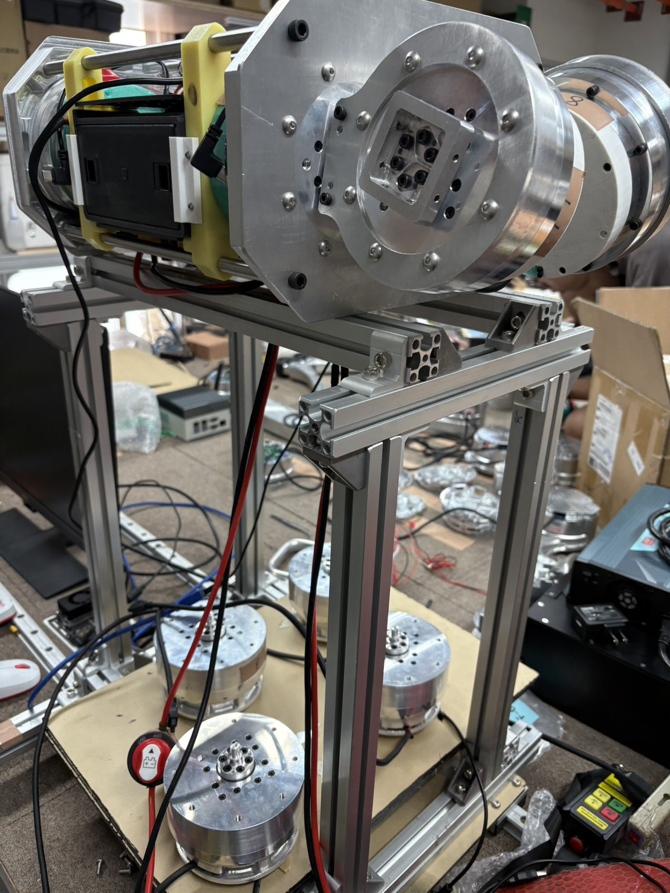
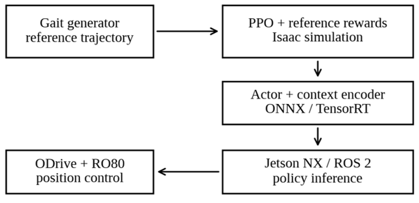
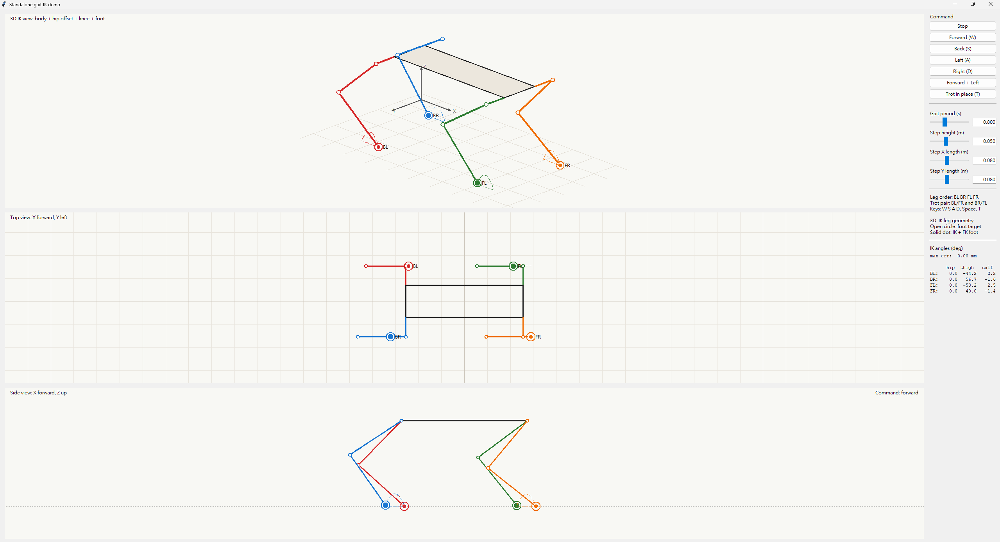
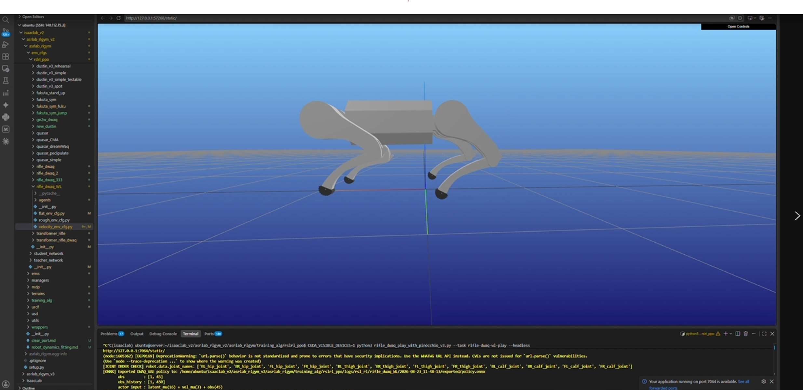
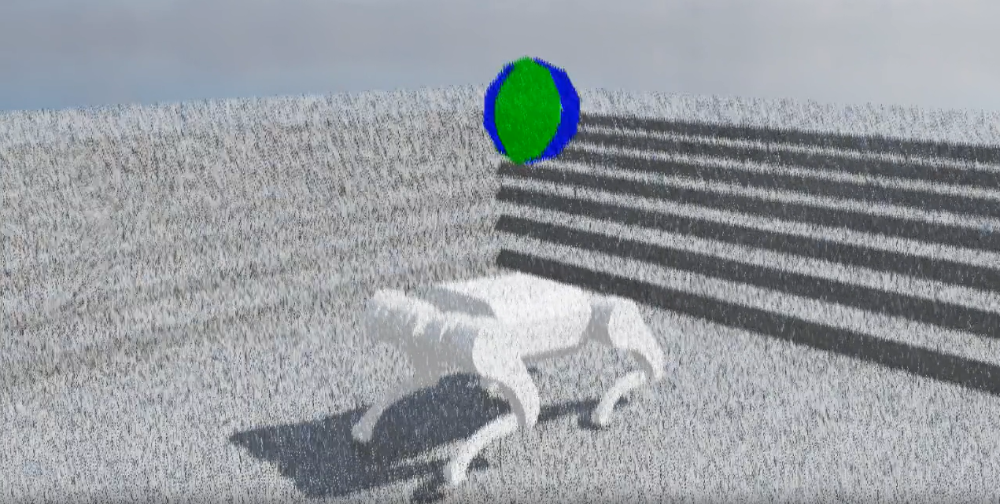
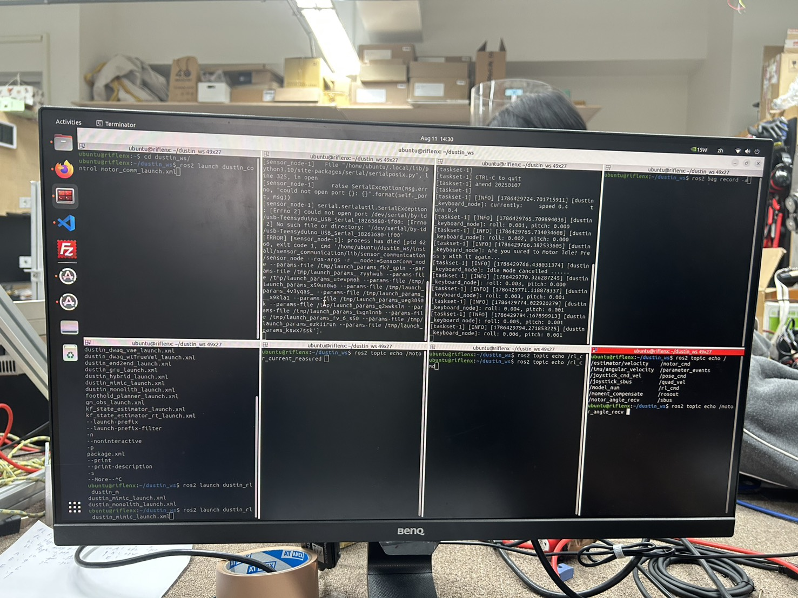
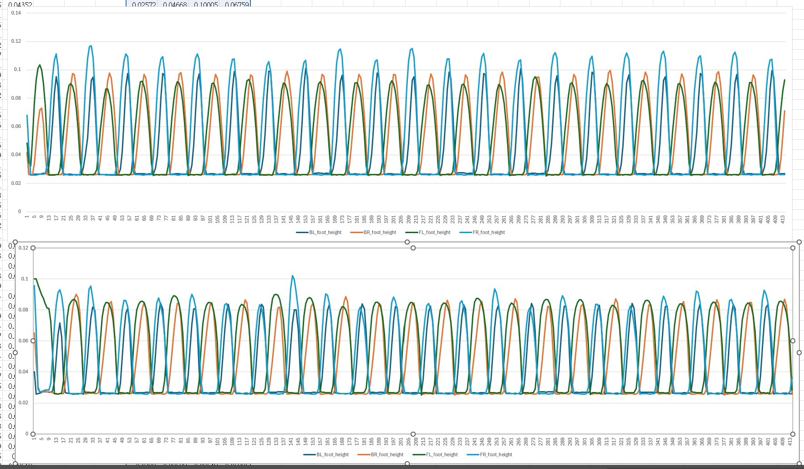
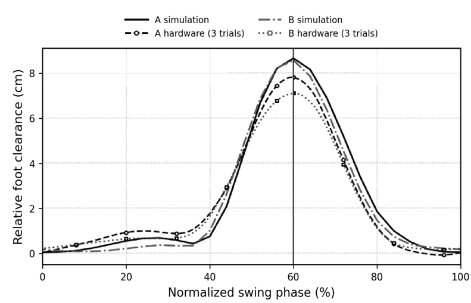

Case Study | Control Systems Laboratory Experience
NTUME ASR Lab - Learning-Based Quadruped Robot Integration
Current laboratory work on the Rifle 12-DoF quadruped platform, connecting actuator/reducer hardware, motor communication, Isaac Lab locomotion training, ROS2 deployment, and sim-to-real debugging. This is the research experience that best represents my move from building course robots into hardware-aware legged robotics.
Built the hardware-control interface that robot learning depends on.
In ASR Lab, I worked close to the actuator layer: motor reduction gearbox design and fabrication, motor command/readback routines, control-board programming, wiring checks, calibration, and repeated hardware repair. The work made one point very clear: robot learning only becomes useful when the physical platform can execute commands repeatably.
My hardware notes include reducer concepts, Cubemars RO80 motor testing, ODrive setup, current and velocity-limit behavior, encoder and magnet-seat tolerance issues, calf output shaft failures, and material/assembly revisions made after physical tests.



Treated locomotion training as an engineering experiment, not a black box.
I recorded and compared training runs while tuning locomotion behavior in Isaac Lab. The logs covered reward and command choices such as foot clearance, flat orientation, gait timing, base height, contact penalties, torque limits, action-rate penalties, and stand-still behavior.
The important skill was not just launching training. It was learning what a policy was optimizing, why a gait became unstable or too rigid, and how imitation learning, reinforcement learning, reward weights, observation choices, and real robot constraints affected one another.
Reward tuning
Compared foot clearance, contact, posture, torque, and action-rate effects.
IL/RL balance
Tracked the tradeoff between motion imitation and command-following flexibility.
Run records
Used checkpoints, TensorBoard, and test notes to make training decisions traceable.




Closed the sim-to-real loop through logs, rosbag data, and failure analysis.
Deployment work forced the system view: launch motor and sensor communication, run the learned policy, record rosbag data, inspect command and motor topics, compare simulated foot-height outputs with physical behavior, then decide whether the next fix belonged in hardware, calibration, state estimation, or the policy.
I helped analyze issues such as violent initial motor motion, standing-pose mismatch, motor protection, joint shaking, front-foot dragging, IMU unit interpretation, Teensy to ODrive communication faults, loose shaft links, and repeated calf shaft failures. Those failures became design evidence instead of noise.



Simulation-to-real validation
Engineering flow
Assemble actuators, reducers, shafts, wiring, control boards, and motor IDs.
Use Isaac Lab RL/IL workflows, reward shaping, checkpoints, and TensorBoard records.
Run ROS2 motor/sensor launches, policy execution, rosbag recording, and topic checks.
Trace failures back to hardware, communication, state estimation, calibration, or policy design.
Technical decision table
| Constraint | Decision | Why it mattered | Skill demonstrated |
|---|---|---|---|
| Gearbox and encoder tolerance created high current and rough rotation | Rebuilt magnet seats, rechecked motor assemblies, and revised the encoder approach | Protected motors and made control behavior more trustworthy before policy deployment | Actuator diagnosis |
| Standing pose mismatch caused unsafe initial motor behavior | Compared simulation outputs, real motor logs, and models trained closer to the hardware stance | Connected an RL deployment failure to a concrete mechanical/control mismatch | Sim-to-real reasoning |
| Calf output shafts failed during repeated physical tests | Moved from weaker shaft assumptions toward more reliable material and coaxiality choices | Converted hardware breakage into a design requirement for future testing | Mechanical reliability |
| Imitation tracking could make command response too rigid | Tuned reference-position tolerance, action penalties, and command/reward balance | Balanced natural gait imitation with controllable locomotion behavior | Robot learning judgment |
| Communication faults crossed software, controller, and wiring boundaries | Used direct USB checks, Teensy/ODrive comparisons, topic echo, and board swaps | Isolated faults without assuming every failure came from the learned policy | Embedded debugging |
Why this matters
Reviewer takeaway
ASR Lab is the strongest signal of my current research direction: I am not only interested in robot learning as an algorithmic problem, but in the complete physical loop that makes learning-based locomotion work on real hardware. The experience strengthens my fit for graduate robotics research in legged robots, actuator design, embedded motor control, and sim-to-real experimentation.